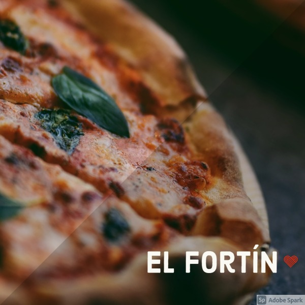

En la Boca, la Av. Almirante Brown ("Bron" según el decir de los vecinos), luce orgullosamente las mejores pizzerías del barrio, y sin lugar a dudas, Banchero es la más tradicional. Agustín Banchero llegó a la Boca del Riachuelo en 1893, procedente de su Génova natal. Instaló una pequeña panadería en la calle Olavarría en la que trabajó con su hijo Juan. Allí nació la fugazza con queso; rápidamente se convirtió en verdadero patrimonio gastronómico de La Boca, recorrió y triunfó en todo el mundo.
Av. Almirante Brown 1200

Hoy El Cedrón es la más famosa pizzería del tradicional barrio de Mataderos, concurrida por un numeroso público "local" (como el reconocido historiador Ofelio Vecchio) y otro que llega a comprobar el prestigio que ha trascendido los límites barriales.Su esquina es conocida comoesquina Breccia, debido a la placa allí ubicada en 1994 que homenajea al dibujante Alberto Breccia.
Av. Juan B. Alberdi 6101

Hoy El Fortín es una famosa pizzería del barrio de Monte Castro en su límite con Villa Luro, con una clientela tan consecuente que podría ser comparada con una hinchada. Fundada en 1947 por los señores Amigo y Fernández, obviamente "hinchas" de Vélez, es uno de los buscados reductos con horno a leña. Mide 3 metros de diámetro, con capacidad para 25 moldes grandes. Se calienta usando quebracho y le dan luz con madera de álamo y sauce.
Av. Alvarez Jonte 5299

En el histórico barrio de Montserrat, en el local de Moreno 467, entre Bolívar y Defensa, donde funciona desde 1989 la pizzería El Chiste, en una manzana muy rica desde el punto de vista patrimonial si consideramos que en ella conviven: la elegante farmacia La Estrella, el Museo de la Ciudad, la casa en que vivió durante su infancia y juventud la recordada actriz Niní Marshall, la Librería de Avila (ex Librería del Colegio) y el Café Notable La Puerto Rico.
Moreno 467

La pizzería del catalán Espinach y del vasco Urcola abrió sus puertas en el local de Corrientes y Libertad, allí suele asegurarse que don Alberto Vaccarezza escribía cuartetas espontáneas en las paredes, de ahí que los parroquianos comenzaron a llamarla "La casa de las cuartetas". A raíz de ello sus dueños la bautizaron oficialmente Las Cuartetas.
Av. Corrientes 838